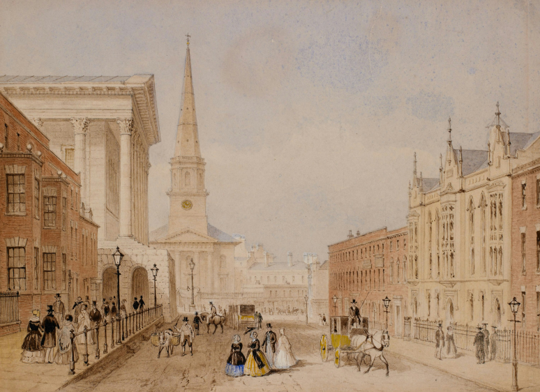

Сильвія
Плат
Сильвія Плат - одна із засновниць жанру «сповідальної поезії» в англомовній літературі. За життя авторки було видано лише дві її книжки — поетичну збірку «Колос та інші поезії» і напівавтобіографічний роман «Під скляним ковпаком», що став справжнім маніфестом представниць тогочасної феміністської літературної критики
Біографія

Моменти, що формують

Письменниця народилася 27 жовтня 1932 року в Бостоні, штат Массачусетс.Сильвія росла в умовах, де матір приділялося більше часу брату, який часто хворів, а самій Плат для привернення уваги батька,який займався наукою, доводилося досягати успіхів у навчанні.
лат обожнювала батька, проте він був суворим та авторитарним конфлікт, який згодом відобразився в її творчості, зокрема у вірші «Татусь» (Daddy, 1962).
Перший вірш вона опублікувала у 8 років,коли помер батько, що стало глибоким шоком і вплинуло на всю її творчість. . До закінчення школи Плат написала понад 50 оповідань, 9 з яких було опубліковано.
У 1950
У 1953
За протекцією письменниці Олівії Хіггінс Проут Сильвія отримала стипендію на навчання в Сміт-коледжі .В цей період вона активно публікувалася в національних виданнях та співпрацювала з кількома газетами.Під час навчання на третьому курсі вона виграла конкурс від журналу Mademoiselle, що дало їй можливість стажуватися в Нью-Йорку позаштатним кореспондентом. Незважаючи на успішне стажування, Плат повернулася морально і фізично виснаженою.
Перебуваючи у стані тяжкої депресії вона здійснила спроба самогубства з запискою: «Пішла на прогулянку, буду завтра», взяла з собою ковдру, пляшку води, баночку снодійного і сховалась в підвалі свого будинку, де почала ковтати таблетки, запиваючи їх водою”.Після чого проходила лікування в клініці Маклін.Події цього періоду життя детально описані в романі «Під скляним ковпаком».
Після відновлення Сильвія продовжила навчання і досягла своєї мрії — взяла участь у літературному курсі в Гарварді. У 1956 році вона одружилася з британським поетом Тедом Х'юзом, від якого мала двох дітей. Однак шлюб не був щасливим, і після того, як дізналася, що чоловік зраджує, Плат подала на розлучення.
Сильвія переживала затяжну депресію, що призвела до її самогубства
ЇЇ виявили мертвою в кухні, з головою, засунутою в духовку плити з увімкненим газом.
“Під скляним ковпаком ”
Роман «Під скляним ковпаком» був опублікований під псевдонімом Victoria Lucas у січні 1963 року. Цей твір, що багато в чому є автобіографічним, описує боротьбу з депресією та особисті випробування авторки.
У пастці досконалості:Короткий огляд сюжету
Події розгортаються у 1950-х роках, коли Естер отримує престижне стажування в Нью-Йорку в журналі Mademoiselle. Хіба не кожна дівчина мріє працювати в такому величезному місті, де відкривається стільки перспектив і нових знайомств?
Але для Естер Грінвуд твору ця блискуча реальність стає тягарем,який поступово перетворюється на пастку. Неймовірно успішна й красива, вона раптом відчуває страх перед тим, що не відповідає високим стандартам, які суспільство постійно нав'язує.Під цим тиском вона відчуває, як її життя стає дедалі більш замкненим, а відчуття ізоляції і самотності, уособлене «скляним ковпаком», поступово руйнує її зсередини.
Естер відчуває, що її думки та почуття не дають їй вибратися з цього стану, і вона бореться з ідеєю самогубства.Чи зможе вона знайти сили для боротьби, чи цей скляний ковпак остаточно затягне її?
Фемінізм і жіноча ідентичність в "Під скляним ковпаком"

“Під скляним ковпаком ”
Під скляним ковпаком Сильвії Плат — це не просто роман, а важливий внескок у феміністичний дискурс.Через історію головної героїні, Естер Грінвуд, авторка оглядає жіночу ідентичність, соціальні очікування та психологічні проблеми, з якими стикаються жінки в патріархальному суспільстві.
Однією з ключових тем роману є пошук жіночої ідентичності.Естер відчуває тягар очікувань. Хоча успішна молода жінка, Естер виявляє, це не приносить їй справжнього задоволення, адже вона підпорядковується стандартам, які не відображають її.
Естер не бажає бути гарною дружиною та матір'ю, проте суспільство вимагає від неї саме цього.
Плат порушує питання про владу чоловіків над жінками, як жінки часто опиняються в психологічній та фізичній залежності від чоловіків. Критика патріархату в романі особливо помітна в стосунках Естер з чоловіками,оскільки вона страждає від нерозуміння і зради з боку чоловіка.
Внутрішня боротьба Естер відображає ширшу проблему жінок, які відчувають тиск з боку суспільства, і як це може вплинути на їхнє психічне здоров'я.
Стан «скляного ковпаку», під яким живе героїня, вказує на те, як жінки часто стають жертвами власних обмежень, і як це заважає їй розвиватись та бути щасливою.